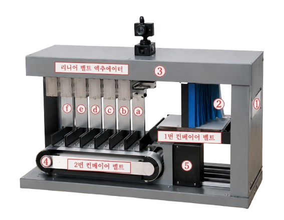
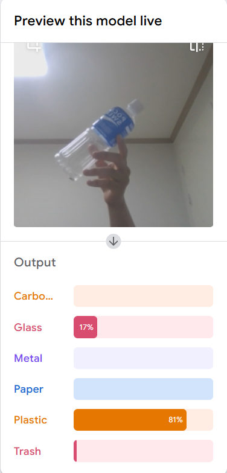

ICROS 2023 · 한국로봇학회 학술대회
딥러닝을
딥러닝을
활용한
쓰레기
자동화
분류 시스템
Automatic Trash Sorting System Using DeepLearning
박주형 · 김영운 · 황유성 · 김동준 · 최현진
상명대학교 휴먼지능로봇공학과
발표자 김대양 | 로봇소프트웨어학과
🤖
🧴플라스틱
🥫캔
📄종이
🍶유리
📦스티로폼
🛍️비닐
01 / 12
여러분은 분리수거를 하시나요?

동양미래대학교 캠퍼스
"대학생에게 가장 필요한 카페인,
그런데 분리수거는 없습니다."
이 사진, 많이 보셨죠?
맞습니다 — 바로 저희 학교입니다.
02 / 12
왜 분리수거가 안 될까?
01
😓
귀찮음
내용물 비우고 세척하고
플라스틱·종이 구분까지
플라스틱·종이 구분까지
02
❓
분류 어려움
무엇을 어디에 버려야
하는지 기준이 모호함
하는지 기준이 모호함
03
🗣️
직접 인터뷰 결과
12명
학생 → 귀찮아서 안 함
5명
청소 선생님 → 그냥 두라고
03 / 12
이 문제를 기술로 해결한 연구
제목딥러닝을 활용한 쓰레기 자동화 분류 시스템
저자박주형, 김영운, 황유성, 김동준, 최현진
소속상명대학교 휴먼지능로봇공학과
학회ICROS 2023 (한국로봇학회, 2023년 6월)
키워드
Low-cost
Recycling
Real-time Object Detection
DeepLearning
04 / 12
기존 방식의 한계
0%
현재 재활용 선별률
서울시 기준
출처: 전국 폐기물 발생 및 처리현황
수작업 선별의 문제점
⚠️작업자 안전사고 위험
⏱낮은 처리 속도
💸높은 인건비
❌분류 기준 불명확
05 / 12
시스템 구조전체 시스템 구조

①
쓰레기 투입
1번 컨베이어 벨트 적재
②
적층 방지
경질 플라스틱 장치 통과
③
카메라 인식
AI 실시간 이미지 분석
④
자동 분류
리니어 벨트 액츄에이터
⑤
재순환
미분류 시 재처리
06 / 12
6가지 자동 분류 항목
🧴플라스틱PET병, 플라스틱 용기
🥫Metal알루미늄 캔, 철 캔
📄종이신문지, 종이 박스
🍶유리유리병, 유리 용기
🗑️Trash기타 쓰레기
🛍️비닐비닐봉지, 랩류
※ 분류 실패 시 순환 구조로 재분류 시도
07 / 12
AI에게 학습시킨 이미지
AI-Hub
생활 폐기물 이미지
0만장
Cardboard · Glass · Metal · Paper · Plastic · Trash
AI-Hub
폐플라스틱 이미지
0만장
PET · PS · PP · PE
플라스틱 세부 분류
플라스틱 세부 분류
총 63만장+ 이미지로 학습된 AI
08 / 12
시스템 도입
♻️
선별률 향상
수작업 방식의 한계 극복
현재 선별률 62.5% 문제
현재 선별률 62.5% 문제
🛡️
작업자 안전
수작업 안전사고 위험 감소
노동자 안전사고 언급
노동자 안전사고 언급
💰
비용 절감
Low-cost 설계
키워드로 명시됨
키워드로 명시됨
⚡
처리 속도 향상
Real-time 인식
키워드로 명시됨
키워드로 명시됨
09 / 12
직접 구현해봤습니다

데이터셋Kaggle Garbage Classification
분류 종류6종 (Cardboard·Glass·Metal·Paper·Plastic·Trash)
모델Google Teachable Machine
환경Web browser
10 / 12
LIVE DEMO
실시간 분류 시연
카메라에 쓰레기를 보여주면 AI가 자동으로 분류합니다
📷
카메라 시작을 눌러주세요
READY
❓
대기 중
카메라를 시작하면 분류가 시작됩니다
티처블 머신 모델 연동 대기 중
11 / 12
우리 학교에 도입된다면?
기술이 사람의
기술이 사람의
행동을 바꿉니다
🗑️ 그냥 넣기만 하면 된다
🤖 AI가 알아서 분류한다
♻️ 학생도, 선생님도 편해진다
12 / 12